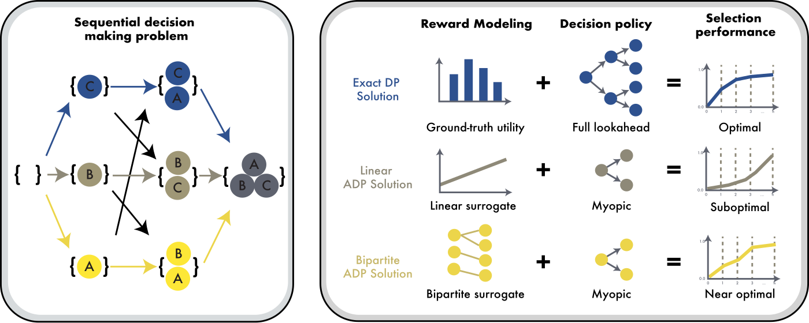
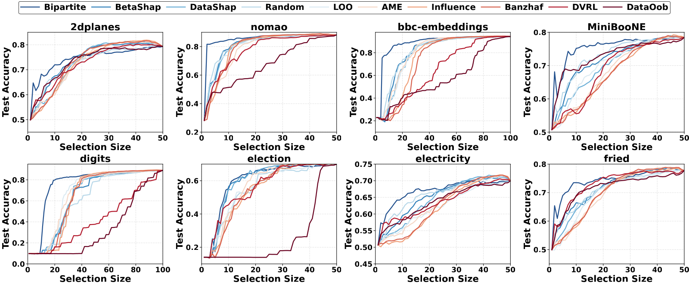
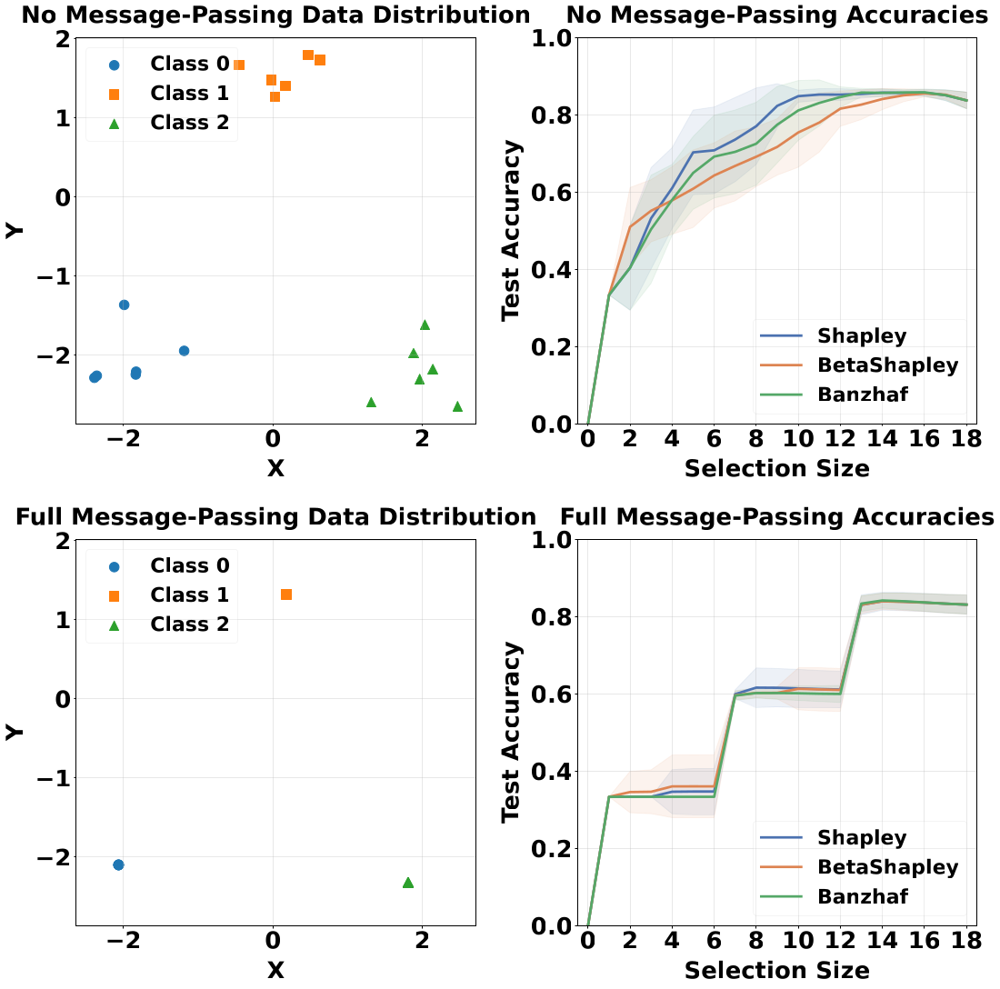

Data selection has emerged as a crucial downstream application of data valuation, yet the theoretical
foundations for using data values in selection remain underexplored. We reformulate data selection as a
sequential decision-making problem where the optimal selection sequence arises from dynamic programming,
and data values can be understood as encodings of this optimal sequence. This framework unifies and
reinterprets existing methods like Data Shapley through the lens of approximate dynamic programming,
revealing them as myopic linear approximations to the sequential problem. We further analyze how selection
optimality degrades with utility curvature under submodularity, explaining when and why these approximations
fail. To bridge theory and practice, we propose an efficient bipartite graph-based surrogate that preserves
submodular structure while enabling scalable greedy selection with provable guarantees. Experiments on
classical ML benchmarks and large-scale LLM fine-tuning data selection demonstrate substantial improvements
over existing methods.
The Story
Approximate dynamic programming, or ADP, is one of the classic and most elegant ideas in optimization. It gets
less attention today than reinforcement learning, but it runs deep. The line runs from Richard Bellman to
Warren Powell and Dimitri Bertsekas. For decades it has solved hard real world problems, from fleet management
to live ride hailing systems like Uber.
LLMs have made training data the thing that matters most. And picking that data is rarely one shot. Data keeps
arriving in batches, and earlier picks stay in. The real question is how to handle these dynamics. Yet most
methods still pick one fixed subset.
So we brought ADP to this setting. Seen as a sequential decision process, popular methods like Data Shapley are
just myopic special cases. That one view unifies them, shows when they fail, and gives a faster and more
accurate selector with guarantees. This holds on both classical ML and large scale LLM fine tuning.
Optimization is everywhere. New tools like LLMs hand us fresh problems to optimize. They also work as a new
kind of optimization tool for many other problems.
In memory of Dimitri Bertsekas. His work on dynamic programming shaped this field, and this paper.
Overview
We often want to keep only the most useful part of a training set. Methods like Data Shapley
give each example a score, and we pick the top ones. This works well in practice, but it has been hard to say
why, or when it breaks. Our idea is to stop scoring all the data at once. Instead, we pick data one step at a
time. The best order to pick comes from dynamic programming. A data value is then just a way
to encode that best order.

Figure 1. The framework for sequential data selection. It has three parts. First, a sequential decision
problem that picks data one step at a time. Second, the core parts of any solution, that is, reward modeling
and a decision policy. Third, selection curves for different choices of reward and policy. Exact dynamic
programming gives the best curve.
We also show when these scoring methods start to fail. What matters is submodularity and how curved the utility
is. We then replace them with a bipartite graph surrogate. It keeps the submodular structure,
scales to large data, and comes with provable guarantees.
Formulation
Here is the problem we actually solve. Most methods pick one fixed subset. We instead optimize the whole
selection curve at once.
Let \(\mathcal{D}\) be a set of \(n\) data points, and let \(U\colon 2^{\mathcal{D}} \to \mathbb{R}\) be a
utility, the score a model gets when trained on a subset. A selection order is a permutation \(\pi\), and
\(S_k^{\pi}\) is its first \(k\) picks. Our objective is the area under the selection curve:
This rewards an order that does well at every budget \(k\), not just one. We read it as a decision process.
The state \(s\) is the set chosen so far. Each step adds one point \(a\) and earns the prefix utility
\(U(s \cup \{a\})\). Summing these rewards gives back the objective above. Exact dynamic programming then
solves it through the Bellman equation:
The best next pick weighs the reward now plus the value of all future picks. This is where common methods take
a shortcut. They drop the future term \(V\), and fit a linear surrogate \(\hat{U}(S) = \hat{b} + \sum_{i \in S}\theta_i\).
For this surrogate the marginal gain of adding \(a\) is simply \(\theta_a\), so one step greedy selection just
ranks points by \(\theta_a\):
Those \(\theta_a\) are exactly data values. So Data Shapley and its relatives are the myopic, linear special
case of our problem. The full objective keeps the future term, and that is what our method goes after.
Results
We put the framework to work in two settings. First, classical machine learning, where our method is
Bipartite. Second, large scale LLM fine tuning, where the same idea becomes
BipCov. In between, a controlled study shows when the popular methods fail.
1. Classical ML benchmarks
Setting. We use eight OpenML datasets: 2dplanes, nomao, bbc-embeddings, MiniBooNE, digits, election,
electricity, and fried. We compare Bipartite against nine data value baselines, including Data Shapley, Beta
Shapley, Banzhaf, DataOob, DVRL, Influence, AME, LOO, and Random. Each method ranks the pool. We then add points
in that order, retrain the model, and trace a selection curve. The x axis is the budget \(k\), the y axis is the
accuracy \(U(S_k)\), and we average over 20 runs.
Why it matters. In practice you have a budget, so the early part of the curve is what counts. Bipartite
puts the most useful data first. On digits it reaches 80% accuracy from about 25 samples, while the baselines
need close to twice as many. This early lead shows up across the datasets.

Figure 2. Bipartite compared with baselines on eight datasets.
At a larger budget of 500 points, Bipartite has the best average accuracy across the eight datasets. It ranks
first on three of them and ties for first on two more.
Method
Avg. accuracy at budget 500
Bipartite (ours)
0.828
Beta Shapley
0.821
Data Shapley
0.820
DVRL
0.758
Mean accuracy over the eight datasets, 20 runs each. Full per dataset numbers are in the paper.
2. When the simple methods fail
Setting. This is a controlled test of the theory. We start from a real dataset and slowly blend each
point's features with its within-class neighbors, set by a proportion \(p \in [0,1]\):
Here \(\mathcal{N}_i\) is the set of within-class neighbors of point \(i\). At \(p=0\) the points keep their own
features and stay easy to tell apart, which means low substitutability and low curvature. At \(p=1\) the points
in a class collapse onto one shared profile, which means high substitutability and high curvature. We track the
mean accuracy of Data Shapley, Beta Shapley, and Banzhaf as \(p\) goes from 0 to 1.
Why it matters. This pins down when the popular methods break. As the points become interchangeable, all
three fall together, and the size of the drop tracks the bound we prove. So the theory does not just say that
they fail. It says exactly when.

Figure 3. Top to bottom, the propagation proportion goes from 0.0 to 1.0. Points become more
substitutable, and mean accuracy drops: Shapley 0.738 to 0.595, BetaShapley 0.706 to 0.597, and Banzhaf
0.720 to 0.590. Using substitutability as a proxy for curvature, this drop matches the (1−c)²
bound from our submodularity analysis.
3. LLM fine-tuning (DATE-LM)
Setting. We move the same idea to instruction selection for LLM fine tuning, using the DATE-LM benchmark.
From a pool of 200k instructions we select 10k, LoRA fine tune Llama-3.1-8B, and evaluate on
MMLU, GSM8K, and BBH. Our method here is BipCov, which first covers the task references and then falls back to
similarity. Scores are the mean over three seeds.
Why it matters. Which data you fine tune on is now one of the biggest levers for LLMs. BipCov beats
strong selection baselines on this real pipeline.
Method
Avg. accuracy (MMLU / GSM8K / BBH)
BipCov (ours)
63.89 ± 0.34
RDS+
62.88 ± 0.25
Random
62.82 ± 0.31
200k instruction pool, select 10k, LoRA fine-tune Llama-3.1-8B, three seeds. Numbers are percentages.
Key Contributions
A sequential view. We treat data selection as a step by step problem. Its best order tells us what a data value should encode.
One framework for many methods. Data Shapley and similar semi-values turn out to be simple linear approximations that look only one step ahead.
When they fail. Using submodularity, we show how selection gets worse as the utility curves more. This tells us when and why current methods break.
A method that scales. We build a bipartite graph surrogate. It keeps the submodular structure and runs greedy selection with provable guarantees.
Strong results. Our method beats prior work on classic ML benchmarks and on data selection for large language model fine tuning.
Citation
@article{chi2025unifying,
title={Unifying and Optimizing Data Values for Selection via Sequential Decision-Making},
author={Chi, Hongliang and Wu, Qiong and Zhou, Zhengyi and Light, Jonathan and Dodwell, Emily and Ma, Yao},
journal={arXiv preprint arXiv:2502.04554},
year={2025}
}